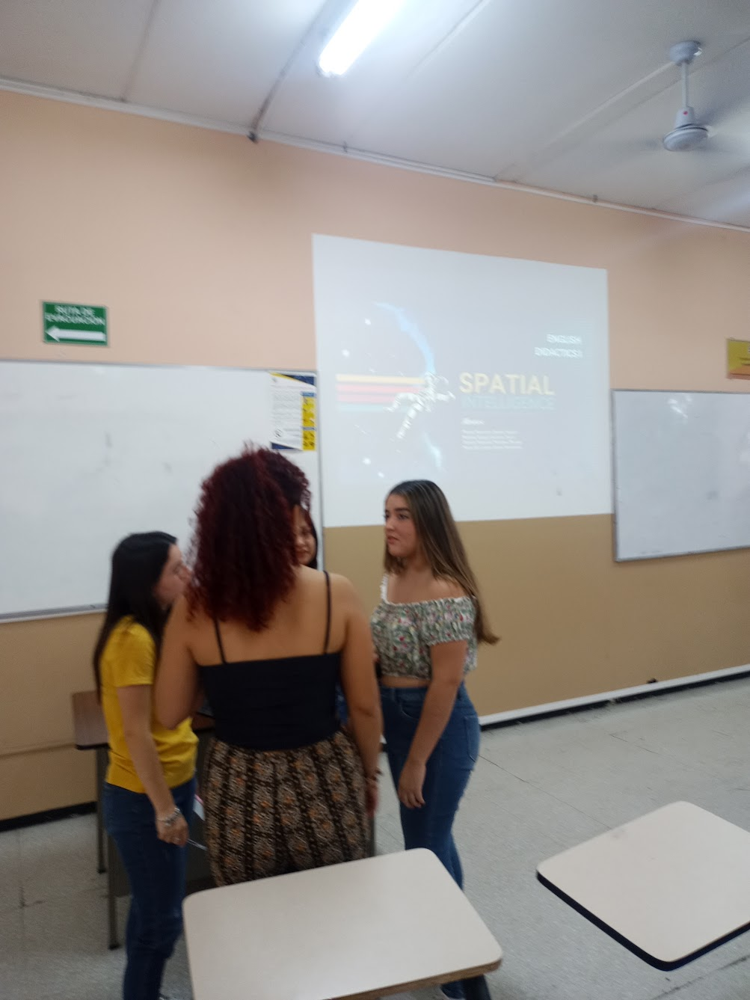
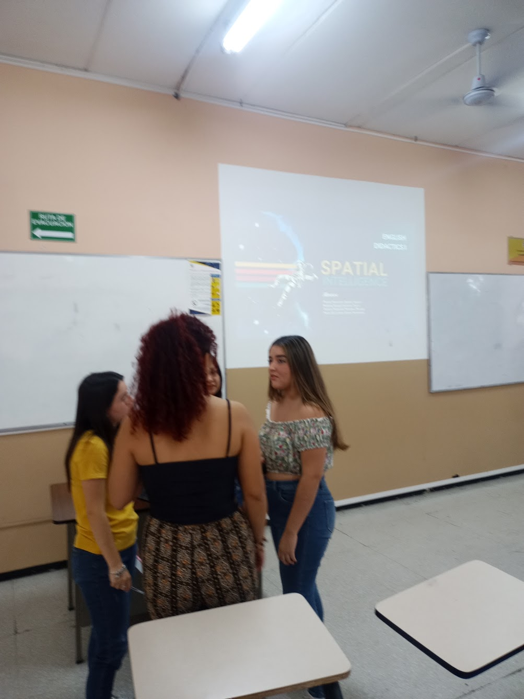
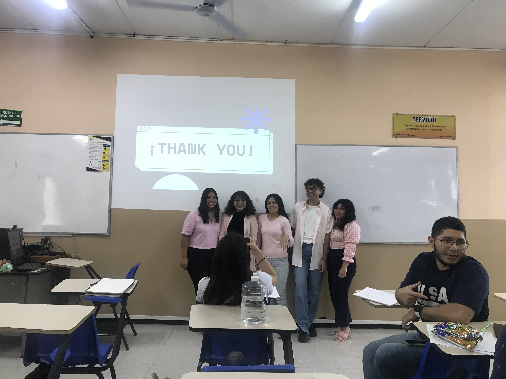
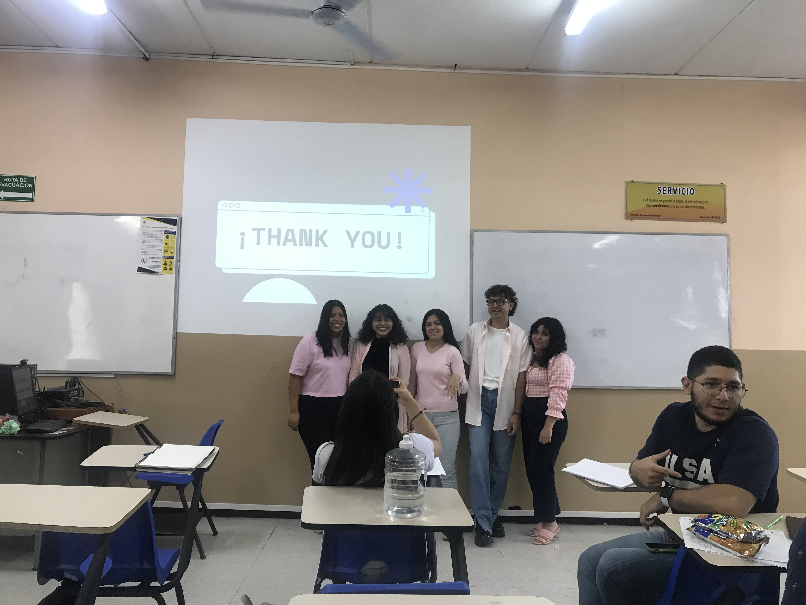

Hello guy! We are still in the class presentations but as I listened to my classmates' presentation on spatial intelligence, I was struck by the beauty and wonder of this unique way of thinking. It's the ability to see the world in three dimensions, to envision shapes and objects in our mind's eye, and to manipulate them in our thoughts.
I learned that spatial intelligence is not just for artists, architects, and engineers - it's for anyone who can appreciate the beauty and complexity of the world around us. It allows us to solve problems, navigate our surroundings, and create things of beauty and utility.
Through the lens of spatial intelligence, the world becomes a canvas, a playground, and a laboratory all at once. It opens up new possibilities for exploration, creativity, and self-expression. It's a gift that can enrich our lives and help us see the world in new and exciting ways.
I left the presentation feeling inspired and awed by the power of spatial intelligence. I realized that it's not just a skill, but a way of seeing and experiencing the world that can bring joy and fulfillment to our lives.
Hey Professor again!, I just finished watching my classmates' presentations on the five intelligences we learned about.
1.Visual-spatial intelligence means being able to think in three dimensions, which is useful for things like art, maps, and architecture.
2.Logical-mathematical intelligence means being able to solve problems using logic and math, which is useful in fields like science and finance.
3.Bodily-kinesthetic intelligence means being good at controlling your body, like in sports or dance. I was really impressed by the examples our classmates gave us. Bodily-kinesthetic intelligence involves the ability to control one's movements and perform tasks that require physical coordination and dexterity.
4.Linguistic intelligence means being good at language, like speaking and writing.
5.Musical intelligence means being good at music, like playing instruments or singing. I found fascinating was musical intelligence. As someone who enjoys listening to music, it was cool to learn about the different components of music and how they can be put together to create different styles and genres. We learned that musical intelligence involves the ability to recognize patterns in rhythm, melody, and harmony, and to create and perform music. The group activity where we had to recognize a short melody using our musical intelligence and it was really fun and challenging.
It was really interesting to see how each intelligence can be useful in different areas. Thanks for teaching us about them!
 

Hi Professor again!, just wanted to share with you what I learned about the four other intelligences that my classmates presented about.
6.Intrapersonal intelligence means understanding yourself, your own emotions, thoughts, and what motivates you.
7.Naturalist intelligence means understanding the natural world, like plants, animals, and ecosystems.
8.Existential intelligence means thinking about big questions like the meaning of life and death.
9.Interpersonal intelligence means understanding other people's emotions, motivations, and intentions, and being able to communicate and build relationships effectively.
It was really cool to see how each of these intelligences can be important and useful in different ways. Thanks for teaching us about them in class!